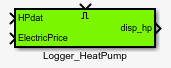
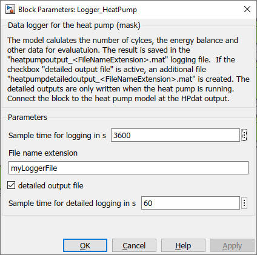

Logger_HeatPump
Path: carint/Evaluation
Purpose
Creates data files which enable to evaluate a heat pump
block of the Carnot blockset by using
cs_energy_heatpump
m-function.
Inputs:
- HPdat : output data of the heat pump
- ElectricPrice : price of the electricity in 1/J
- Enable : "true" or "1" activates the logging of the data in the files
Output:
- disp_hp : displaying data for a heat pump
- files : "heatpumpoutput_extension.mat" and "heatpumpdetailoutput_extension.mat"
where extension is a string you can choose in the parameters of the block.
Description
The file "heatpumpdetailoutput_extension.mat" is only written
if the parameter "detailed output" is activated.
Detailed outputs
are written only if the compressor is working.
The files are saved in the
current working directory of Matlab unless you specify a complete pathname.
The ElectricPrice input is usefull if you want to evaluate the energy costs
with variable traiffs.
The files contain the following informations in timeseries variables :
- Tc_in source inlet temperature in degree Celsius
- Tc_out source outlet temperature in degree Celsius
- MassC source integrated massflow in kg
- Qc source energy in Joule
- Th_in heating inlet temperature in degree Celsius
- Th_out heating outlet temperature in degree Celsius
- MassH heating integrated massflow in kg
- Qh heating energy in Joule
- Welec_in consumed electric energy in Joule
- Cycles compressor number of 'on' cycles
- OpTime compressor working time in s
- CostElecBuy costs of the electric energy in 1/J
For a full list of data point names see
2_Basic_Concepts.
Parameters and Dialog Box
- sample time for data saving in s (standard value 3600 s)
- File extension: the text string replaces "extension"
in the filename "heatpumpoutput_extension.mat" and "heatpumpdetailoutput_extension.mat"
- checkbox for additional detailed data file
(some evaluations in cs_energy_heatpump
are only possible with the detailed file, e.g. mean operation temperature)
-
sample time for detailed logging (default value of 60 s, be carefull when
changing this value)

References
For more informations about the loggers and evaluation
see manual_evalulation.
Characteristics
Direct Feedthrough Yes
Sample time entered
by user in block parameters
Vectorized Yes